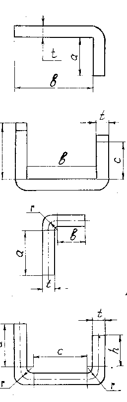

ГИБКА МЕТАЛЛА. ФОРМУЛЫ ДЛЯ ОПРЕДЕЛЕНИЯ ДЛИНЫ ЗАГОТОВКИ

L = a + b + 0,5t
L = a + b + c + 0,5t
L = а + b + Π / 2(r + t / 2)
L = а + h + c + Π (r + t / 2)
A, B, C, H – прямолинейные участки заготовки
T – толщина заготовки
Π - число Пифагора = 3,14
R – радиус закругления
D – наружный диаметр кольца
L = ΠD